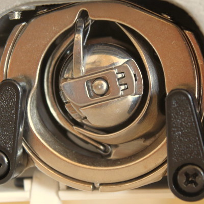

THE THREAD GUIDE
helping you get the best from your sewing machine
The Thread Guide is a friendly and helpful service based in Winchester to help you get the best from your sewing machine and overlocker
SERVICING & REPAIR

If your machine isn’t working properly, I offer maintenance, servicing and repairs for sewing machines and overlockers. Prices start from £50. For a more detailed estimate, let’s discuss what problem you’re having and I can suggest an appropriate solution. And if I can’t fix it, I won’t charge you!
ADVICE & TUITION
If you aren’t sure whether the problem is with your machine or with the way you are using it, I can check your machine (fixing anything necessary) and then give you a 1 to 1 session to get you sewing confidently.